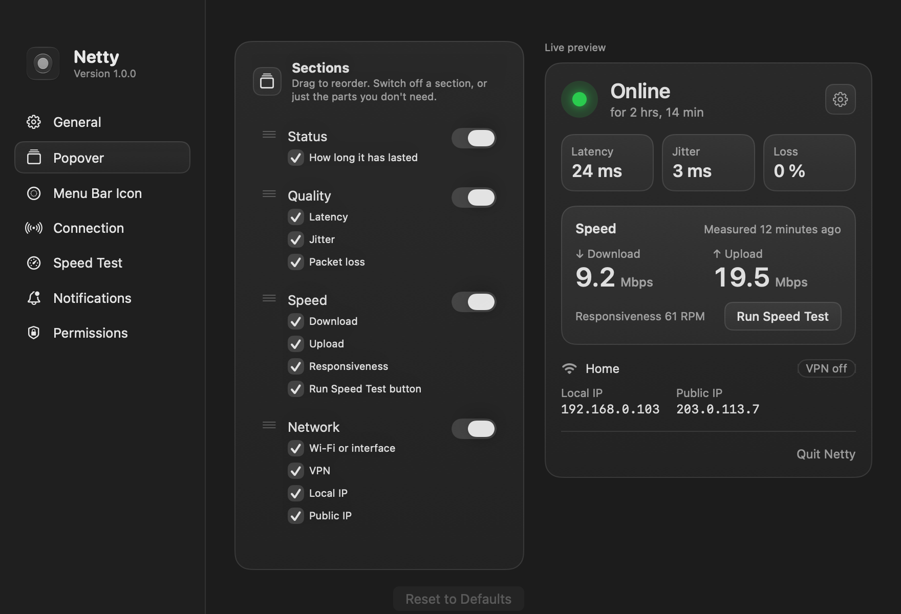
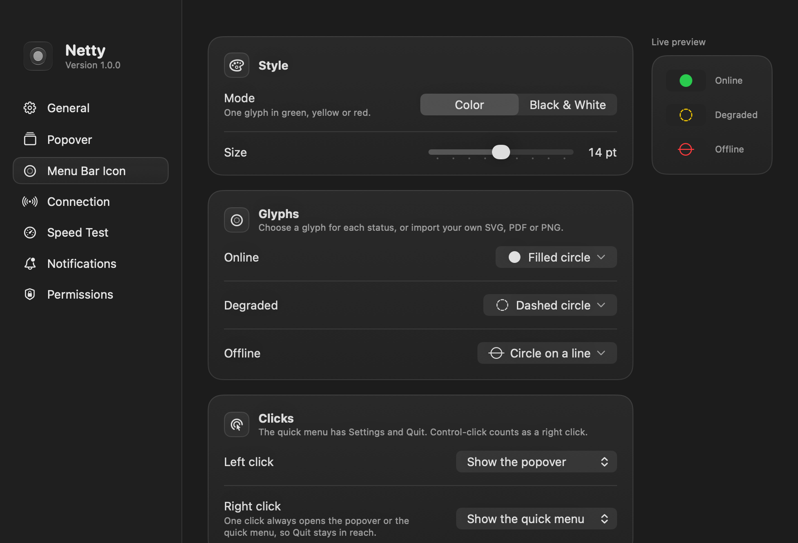
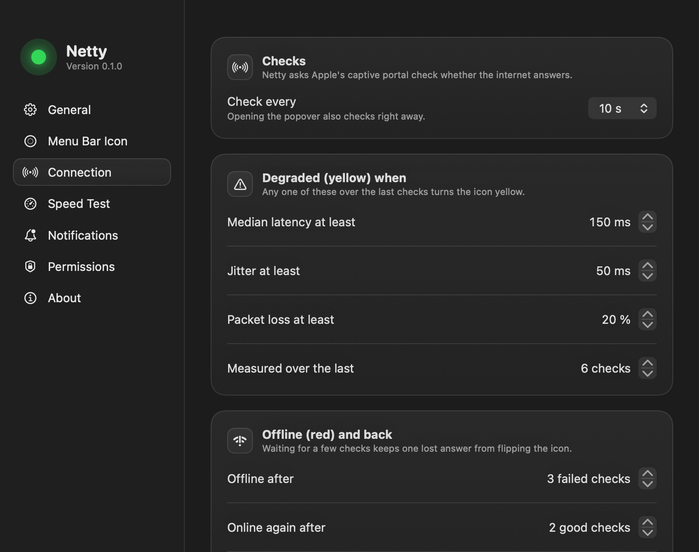

Know when your internet drops.
A dot in your Mac's menu bar: green when you're online, yellow when the connection is poor, red when there's no internet. Free and open source.
Version 1.0.0, for macOS 26 or later.
That's your connection, measured right now in this browser with Netty's own rules. In the menu bar, Netty checks every 10 seconds.
Three colors, one glance.
Online
The internet answers, fast and steady.
Degraded
You're online, but latency, jitter or packet loss is high: calls lag and pages stall.
Offline
No internet, even when Wi-Fi says connected. A hotel sign-in page counts too.
Everything about your connection, nothing more.
It checks the internet, not just your Wi-Fi.
Netty asks Apple's captive portal page and Google's whether the internet really answers, and times a handshake with 1.1.1.1. A click on the icon checks at once and confirms a drop in seconds.

A speed test when you want one.
Download, upload and responsiveness from Apple's built-in networkQuality, with no extra servers. Run it from the popover or on a schedule; scheduled tests skip an iPhone hotspot.

Your popover, your way.
Show, hide and drag its sections, or switch off single parts: keep only latency, or hide the IP addresses. A live preview follows every change.

An icon that fits your menu bar.
In color or black and white, with a circle symbol for each status or an image of your own. Pick what each click does, too: the popover, a quick menu, a speed test or Settings.

Rules you can read, and change.
Every limit behind the colors says what it means in plain words. Tune when yellow and red appear, or go back to the defaults in one click.

- Notifications when the connection drops and when it comes back, with how long you were offline. Focus modes are respected.
- Network details: the Wi-Fi name, whether a VPN carries your traffic, and your local and public IP. Click an address to copy it.
- Launch at login, so the dot is there whenever your Mac is.
- Native and light: built in Swift for macOS 26, with the look of the system around it.
What leaves your Mac.
Only the checks themselves, to servers that already answer this kind of question.
- Apple and GoogleTheir captive portal pages, to see whether the internet answers.
- Cloudflare 1.1.1.1A handshake to time the latency, and your public IP, looked up only while the popover shows it.
- Apple's speed test serversOnly when a speed test runs.
No analytics, no telemetry, no account.
Install in a minute.
-
Download
Open Netty.dmg and drag Netty to Applications.
-
Open it once
Netty isn't notarized by Apple yet, so macOS stops it the first time. Choose Done, then click Open Anyway in System Settings, Privacy & Security.
-
Say hello
The welcome window asks for notifications and Location, which macOS needs to share the Wi-Fi name. Both are optional.
Questions, answered.
Is Netty free?
Yes. Netty is free and open source under the GPL-3.0 license. The code is on GitHub.
Why does it ask for Location?
macOS shares the name of your Wi-Fi network only with apps that have Location access. Netty never reads where you are, and works without it: you just see “Wi-Fi” instead of the name.
Does it slow down my connection?
No. A check is a few hundred bytes every 10 seconds. Only a speed test uses real data, tens to hundreds of megabytes, and it runs only when you ask or on a schedule you turn on.
What makes the dot turn yellow?
By default, a median latency of 150 ms or more, jitter of 50 ms or more, or 20% of checks without an answer. You can change each limit in Settings.
Why isn't it on the Mac App Store?
Netty ships from GitHub so it can stay free and open, with no account in between. Notarization by Apple is on the way.
Which Macs does it run on?
Any Mac with macOS 26 or later.